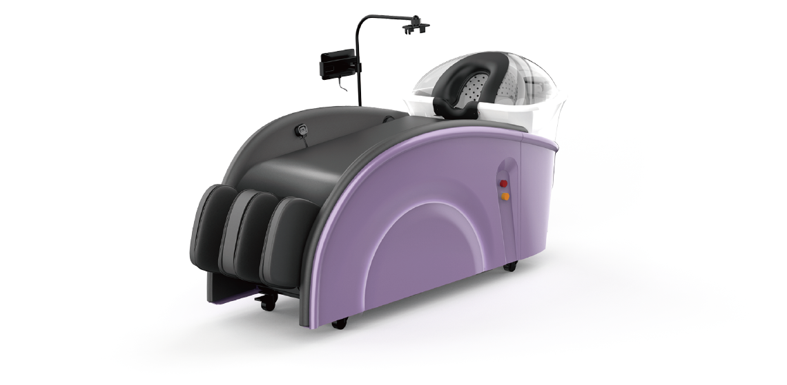

專業頭皮理療方案
從根源解決問題，重現髮絲與頭皮的健康活力。

我們的專業
六大功能，全面呵護頭皮健康
我們的專業理療師將使用最先進的儀器和天然產品，為您的頭皮進行深度淨化與滋養，解決各種惱人的頭皮問題。
深度淨化
清除毛囊內積聚的油脂與化學殘留。
舒緩敏感
鎮靜紅腫與發癢，恢復頭皮屏障。
油脂平衡
調節皮脂腺分泌，告別油膩髮根。
強健髮根
注入生長因子，減少非正常落髮。
循環促進
透過按摩和儀器刺激頭皮血液循環。
壓力釋放
專業按摩手法，幫助全身放鬆減壓。
自動洗頭機五大特色
1
高壓水柱深層清潔不掉髮
強力水柱深入毛孔徹底清潔，溫和不傷髮質，洗得乾淨也洗得安心無負擔。
2
客製化服務
多段智能洗髮模式任意選擇，自由調整節奏與強度，滿足各種不同頭皮需求。
3
U形水柱180度無死角
U型環繞水柱全面包覆，360 度沖洗無死角，髮絲柔順不打結更滑順。
4
解放雙手懶人福音
一鍵啟動全自動洗髮流程，徹底解放雙手，懶人與專業沙龍的夢幻選擇。
5
紅外線光刺激毛囊增生
紅外線深層刺激頭皮毛囊，促進血液循環與生髮，髮量自然更健康濃密。
公司產品優勢
降低人力成本
透過 AI 全自動服務機器，協助業者減少對洗髮人員的依賴，降低營運成本
提升服務效率
全自動化的服務流程，縮短服務時間，增加店家接待顧客的能力
無技術門檻
設備操作簡便，店家無需專業技術即可引進，適合各類型店家及創業者
創新顧客體驗
結合 AI 科技與傳統服務，為顧客帶來全新感受，提升顧客滿意度
常見問題 (FAQ)
載入中...